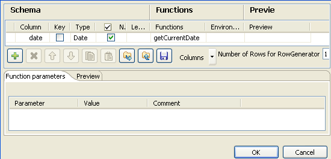
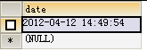

|
Component family |
Databases/DB Generic | |
|
Function |
tDBOutput writes, updates, makes changes or suppresses entries in a database. NoteTo use this component, relevant DBMSs' ODBC drivers should be installed and the corresponding ODBC connections should be configured via the database connection configuration wizard. | |
|
Purpose |
tDBOutput executes the action defined on the data in a table, based on the flow incoming from the preceding component in the Job. NoteSpecific Output component should always be preferred to generic component. | |
|
Basic settings |
Property type |
Either Built-in or Repository. |
|
|
|
Built-in: No property data stored centrally. |
|
|
|
Repository: Select the repository file in which the properties are stored. The fields that follow are completed automatically using the data retrieved. |
|
|
|
Click this icon to open the database connection configuration wizard and store the database connection parameters you set in the component Basic settings view. For more information about setting up and storing database connection parameters, see Talend Open Studio User Guide. |
|
|
Database |
Name of the data source defined via the database connection configuration wizard. |
|
|
Username and Password |
DB user authentication data. |
|
|
Table |
Name of the table to be written. Note that only one table can be written at a time |
|
|
Action on data |
On the data of the table defined, you can perform: Insert: Add new entries to the table. If duplicates are found, Job stops. Update: Make changes to existing entries Insert or update: inserts a new record. If the record with the given reference already exists, an update would be made. Update or insert: updates the record with the given reference. If the record does not exist, a new record would be inserted. Delete: Remove entries corresponding to the input flow. WarningIt is necessary to specify at least one column as a primary key on which the Update and Delete operations are based. You can do that by clicking Edit Schema and selecting the check box(es) next to the column(s) you want to set as primary key(s). For an advanced use, click the Advanced settings view where you can simultaneously define primary keys for the Update and Delete operations. To do that: Select the Use field options check box and then in the Key in update column, select the check boxes next to the column names you want to use as a base for the Update operation. Do the same in the Key in delete column for the Delete operation. |
|
|
Clear data in table |
Select this check box to delete data in the selected table before any operation. |
|
|
Schema and Edit schema |
A schema is a row description, i.e., it defines the number of fields to be processed and passed on to the next component. The schema is either Built-in or stored remotely in the Repository.
|
|
|
|
Built-in: The schema is created and stored locally for this component only. Related topic: see Talend Open Studio User Guide. |
|
|
|
Repository: The schema already exists and is stored in the Repository, hence can be reused. Related topic: see Talend Open Studio User Guide. |
|
|
Die on error |
This check box is selected by default. Clear the check box to skip the row on error and complete the process for error-free rows. If needed, you can retrieve the rows on error via a Row > Rejects link. |
|
Commit every |
Enter the number of rows to be completed before committing batches of rows together into the DB. This option ensures transaction quality (but not rollback) and, above all, better performance at execution. | |
|
|
Additional Columns |
This option is not offered if you create (with or without drop) the DB table. This option allows you to call SQL functions to perform actions on columns, which are not insert, nor update or delete actions, or action that require particular preprocessing. |
|
|
|
Name: Type in the name of the schema column to be altered or inserted as new column |
|
|
|
SQL expression: Type in the SQL statement to be executed in order to alter or insert the relevant column data. |
|
|
|
Position: Select Before, Replace or After depending on the action to be performed on the reference column. |
|
|
|
Reference column: Type in a column of reference that the tDBOutput can use to place or replace the new or altered column. |
|
|
Use field options |
Select this check box to customize a request, especially when there is double action on data. |
|
|
Enable debug mode |
Select this check box to display each step during processing entries in a database. |
|
|
Use java.sql.Statement |
Select this check box to use the |
|
|
tStatCatcher Statistics |
Select this check box to collect log data at the component level. |
|
Usage |
This component offers the flexibility benefit of the DB query and covers all of the SQL queries possible. This component must be used as an output component. It allows you to carry out actions on the data of a table in a database. It also allows you to create a reject flow using a Row > Rejects link to filter data in error. For a related scenario, see the section called “Scenario 3: Retrieve data in error with a Reject link”. | |
This scenario clears the data in a table of a MySql database first and then adds a row to it.
The table, named Date, contains one column called date with the type being date.
Warning
As a prerequisite of this Job, the MySQL ODBC driver must have been installed and the corresponding ODBC connection must have been configured.
Drop tDBOutput and tRowGenerator from the Palette to the design workspace.
Connect the components using a Row > Main link.

Double-click tRowGenerator to open its Schema editor.
Click the [+] button to add a line.
Enter date as the column name.
Select Date from the data type list.
Select getCurrentDate from the Functions list.
Enter 1 in the Number of Rows for RowGenerator field as only one row will be added to the table.
Click OK to close the editor and propagate the schema changes to tDBOutput subsequently.
Double-click tDBOutput to open its Basic settings view in the Component tab.

In the Database field, enter the name of the data source defined during the configuration of the MySql ODBC connection.
To configure an ODBC connection, click
 to open the database connection configuration
wizard.
to open the database connection configuration
wizard.In the Username and Password fields, enter the database authentication credentials.
In the Table field, enter the table name, Date in this example.
In the Action on data field, select Insert to insert a line to the table.
Select the check box Clear data in table to clear the table before the insertion.
Save the Job and press F6 to run.
As shown above, the table now has only one line about the current date and time.